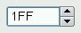

Customizing Qt Widgets
In some cases, we find that a Qt widget requires more customization than is possible by setting its properties in Qt Designer or by calling its functions. A simple and direct solution is to subclass the relevant widget class and adapt it to suit our needs.

In this section, we will develop a hexadecimal spin box to show how this works. QSpinBox only supports decimal integers, but by subclassing it's quite easy to make it accept and display hexadecimal values.
#ifndef HEXSPINBOX_H
#define HEXSPINBOX_H
#include <QSpinBox>
class QRegExpValidator;
class HexSpinBox : public QSpinBox
{
Q_OBJECT
public:
HexSpinBox(QWidget *parent = 0);
protected:
QValidator::State validate(QString &text, int &pos) const;
int valueFromText(const QString &text) const;
QString textFromValue(int value) const;
private:
QRegExpValidator *validator;
};
#endif
The HexSpinBox inherits most of its functionality from QSpinBox. It provides a typical constructor and reimplements three virtual functions from QSpinBox.
#include <QtGui>
#include "hexspinbox.h"
HexSpinBox::HexSpinBox(QWidget *parent)
: QSpinBox(parent)
{
setRange(0, 255);
validator = new QRegExpValidator(QRegExp("[0-9A-Fa-f]{1,8}"), this);
}
We set the default range to be 0 to 255 (0x00 to 0xFF), which is more appropriate for a hexadecimal spin box than QSpinBox's default of 0 to 99.
The user can modify a spin box's current value either by clicking its up and down arrows or by typing a value into the spin box's line editor. In the latter case, we want to restrict the user's input to legitimate hexadecimal numbers. To achieve this, we use a QRegExpValidator that accepts between one and eight characters, each of which must be in one of the sets, '0' to '9', 'A' to 'F', and 'a' to 'f'.
QValidator::State HexSpinBox::validate(QString &text, int &pos) const
{
return validator->validate(text, pos);
}
This function is called by QSpinBox to see if the text entered so far is valid. There are three possible results: Invalid (the text doesn't match the regular expression), Intermediate (the text is a plausible part of a valid value), and Acceptable (the text is valid). The QRegExpValidator has a suitable validate() function, so we simply return the result of calling it. In theory, we should return Invalid or Intermediate for values that lie outside the spin box's range, but QSpinBox is smart enough to detect that condition without any help.
QString HexSpinBox::textFromValue(int value) const
{
return QString::number(value, 16).toUpper();
}
The textFromValue() function converts an integer value to a string. QSpinBox calls it to update the editor part of the spin box when the user presses the spin box's up or down arrows. We use the static function QString::number() with a second argument of 16 to convert the value to lowercase hexadecimal, and call QString::toUpper() on the result to make it uppercase.
int HexSpinBox::valueFromText(const QString &text) const
{
bool ok;
return text.toInt(&ok, 16);
}
The valueFromText() function performs the reverse conversion, from a string to an integer value. It is called by QSpinBox when the user types a value into the editor part of the spin box and presses Enter. We use the QString::toInt() function to attempt to convert the current text to an integer value, again using base 16. If the string is not valid hexadecimal, ok is set to false and toInt() returns 0. Here, we don't have to consider this possibility because the validator only permits valid hexadecimal strings to be entered. Instead of passing the address of a dummy variable (ok), we could instead pass a null pointer as the first argument to toInt().
We have now finished the hexadecimal spin box. Customizing other Qt widgets follows the same pattern: Pick a suitable Qt widget, subclass it, and reimplement some virtual functions to change its behavior.
|